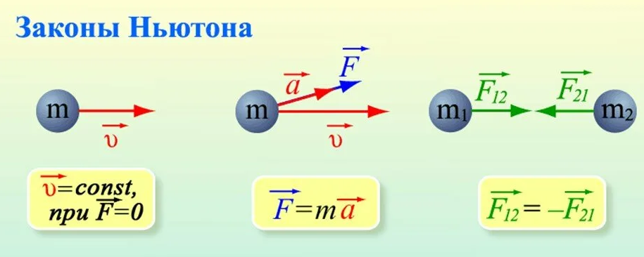
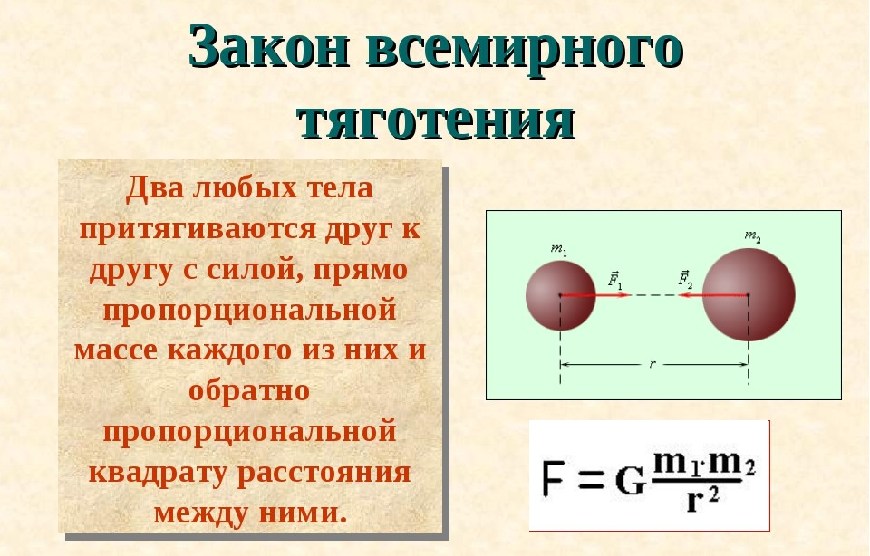

Законы Ньютона — три важнейших закона классической механики, которые позволяют записать уравнения движения для любой механической системы, если известны силы, действующие на составляющие её тела.

Закон всемирного тяготения объясняет механическое устройство Солнечной системы, и законы Кеплера, описывающие траектории движения планет, могут быть выведены из него. Для Кеплера его законы носили чисто описательный характер — ученый просто обобщил свои наблюдения в математической форме, не подведя под формулы никаких теоретических оснований. В великой же системе мироустройства по Ньютону законы Кеплера становятся прямым следствием универсальных законов механики и закона всемирного тяготения.